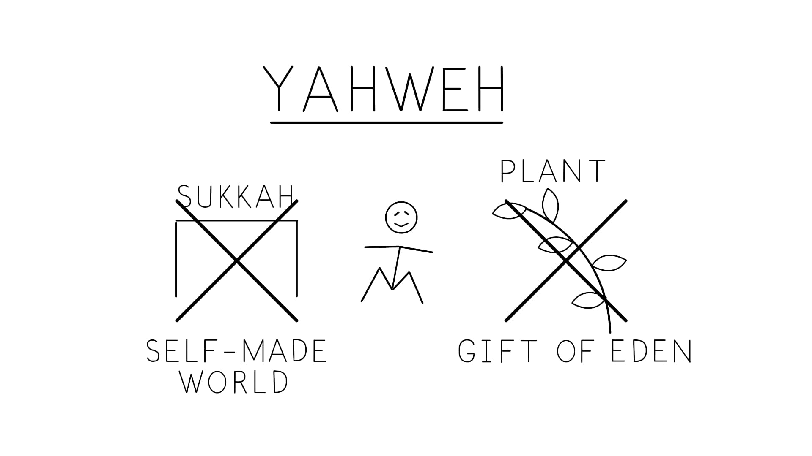

A Provisão de Jonas vs. a de Deus. Ilustração criada por Tim Mackie para BibleProject Classroom: Jonas (2019).Jonah's Versus God's Provision. Illustration created by Tim Mackie for BibleProject Classroom: Jonah (2019).
Há apenas outros dois textos na Bíblia Hebraica sobre vermes comendo e causando ruína, e ambos são hiperlinks relevantes em Jonas 4. Esta frase aparece na história do maná (Êxod. 16:20), onde aos israelitas é instruído a não ajuntar maná extra para o dia seguinte.There are only two other texts in the Hebrew Bible about worms eating and causing ruin, and both are relevant hyperlinks in Jonah 4. This phrase appears in the manna story (Exod. 16:20), where the Israelites are instructed to not gather extra manna for the next day.
Êxodo 16:17, 19-20 NASB* — 17 "Os filhos de Israel ajuntaram, uns muito, outros muito pouco ... 19 E Moisés lhes disse: 'Não deixe nenhum dele para a manhã.' 20 Mas não ouviram a Moisés, e deixaram dele até a manhã, e gerou vermes (תולעה)." *Palavras-chave adaptadas pelo professor. Esta frase também aparece numa seção de maldições "Éden-invertido" que virão sobre a terra por causa da desobediência de Israel (Deut. 28:39). Deuteronômio 28:38-39 NASB* — 38 "Tirareis muita semente ao campo, mas colherás pouco, pois o gafanhoto a consumirá. 39 Plantarás vinhas, e as cultivarás, mas não beberás vinho e não colherás, pois o verme (תולעת) a comerá." *Palavras-chave adaptadas pelo professor.Exodus 16:17, 19-20 NASB* — 17 "The sons of Israel gathered, some very much, and some very little ... 19 And Moses said to them, 'Let no one leave any of it unto morning.' 20 But they did not listen to Moses, and they left from it unto morning, and it was infested with worms (תולעה)." *Key Words Adapted by Teacher. This phrase also appears in a section of "inverted-Eden" curses that will come upon the land because of Israel's obedience (Deut. 28:39). Deuteronomy 28:38-39 NASB* — 38 "You will bring much seed out to the field, but you will gather little, for the locust will eat it away. 39 You will plant vineyards, and work them, but you will drink no wine and you will not gather, for the worm (תולעת) will eat it." *Key Words Adapted by Teacher.
Em ambos os textos, os vermes são enviados por Deus para reverter uma bênção do Éden. Em Êxodo 16, o maná é chamado "o pão dos céus" (Êxod. 16:4), e em Deuteronômio 28, as bênçãos são todas semelhantes ao Éden e abundantes. E os vermes são o resultado de ser exilado para fora do Éden, onde os animais se tornam hostis em vez de pacíficos com os humanos. Vermes também são associados com morte e cadáveres em decomposição (Isa. 14:11, 66:24), então são o ícone último da mortalidade e perda pós-Éden. Deste modo, o verme é um instrumento de juízo divino muito mais claro do que o peixe, que desempenha um papel mais positivo tanto em Gênesis 1 (dia 5 da criação) quanto aqui nesta história.In both of these texts, the worms are sent by God to reverse an Eden blessing. In Exodus 16, the manna is called "the bread from the heavens" (Exod. 16:4), and in Deuteronomy 28, the blessings are all Eden-like and abundant. And the worms are the result of being exiled out of Eden, where animals become hostile instead of peaceable with humans. Worms are also associated with death and decomposing corpses (Isa. 14:11, 66:24), so they are the ultimate icon of post-Eden mortality and loss. In this way, the worm is a much more clear instrument of divine judgment. than the fish, which plays a more positive role both in Genesis 1 (day 5 of creation) and here in this story.
A imagem de uma videira saudável que cresce e rapidamente murcha como sinal do juízo de Deus é um motivo comum nos Profetas para governantes e seus reinos que crescem e rapidamente passam.The image of a healthy growing vine that quickly withers as a sign of God's judgment is a common motif in the Prophets for rulers and their kingdoms that grow and quickly pass away.
Isaías 40:6-7, 23-24 Tradução do Instrutor — 6 "Toda a carne é erva, e toda a sua benignidade como a flor do campo. 7 Seca-se a erva, e cai a flor, quando o vento de Yahweh sopra sobre ela ... 23 Ele reduz os governantes a nada, e faz os juízes da terra como coisa que não é. 24 Mal estão plantados, mal lançam raiz ao solo, e ele sopra sobre eles, e eles murcham, e uma tormenta os levanta como pragana." A monarquia de Israel é comparada a uma videira florescente que é soprada pelo vento leste de modo que murcha. Ezequiel 17:2-10 NASB — 2 "Filho do homem, propõe um enigma e fala uma parábola à casa de Israel ... 5 [uma águia] tomou alguma da semente da terra e a plantou em solo fértil. Colocou-a junto a águas abundantes; pô-la como um salgueiro. 6 Então brotou e se tornou uma videira rasteira com seus ramos voltados para ele, mas suas raízes permaneceram debaixo dela. Assim se tornou uma videira e produziu ramos e estendeu ramos. ... 10 Eis que, embora plantada, prosperará? Não murchará completamente assim que o vento leste a alcançar — murchará nos canteiros onde cresceu?" Ezequiel 19:10-12 NASB — 10 "Tua mãe foi como uma videira na tua vinha, plantada por águas; era frutífera e cheia de ramos por causa de águas abundantes. 11 E tinha fortes ramos próprios para cetros de governantes, e sua altura foi exaltada acima das nuvens para que fosse vista em sua altura com a massa de seus ramos. 12 Mas foi arrancada na fúria; foi lançada por terra; e o vento leste secou o seu fruto. Seu forte ramo foi arrancado, de modo que murchou. Ver também Salmo 80; Isaías 5:1-7; Oséias 10; Joel 1:12-20. Se a alegria de Jonas sobre sua videira e sua subsequente perda dela é uma parábola para ensiná-lo sobre a misericórdia de Deus, as associações reais com uma videira arruinada apontam para a história de Israel. Assim como Deus proveu a linhagem de Davi para Israel (do nada, como a videira), assim também a tirará (exílio)."Isaiah 40:6-7, 23-24 Instructor's Translation — 6 "All flesh is grass, and all its covenant loyalty like a flower of the field. 7 The grass withers and the flower fades, for the wind of Yahweh blows upon it ... 23 He makes rulers into nothing, and makes the judges of the land like nothingness. 24 Scarcely are they planted, scarcely do they take root, their stock in the ground, and then he blows on them and they wither, and a storm lifts them away like chaff." Israel's monarchy is likened to a flourishing vine that is blown by the east wind so that it withers. Ezekiel 17:2-10 NASB — 2 "Son of man, propound a riddle and speak a parable to the house of Israel ... 5 [an eagle] took some of the seed of the land and planted it in fertile soil. He placed it beside abundant waters; he set it as a willow. 6 Then it sprouted and became a low, spreading vine with its branches turned toward him, but its roots remained under it. So it became a vine and yielded shoots and sent out branches. ... 10 Behold, though it is planted, will it thrive? Will it not completely wither as soon as the east wind reaches it—wither on the beds where it grew?" Ezekiel 19:10-12 NASB — 10 "Your mother was like a vine in your vineyard, planted by the waters; it was fruitful and full of branches because of abundant waters. 11 And it had strong branches fit for scepters of rulers, and its height was raised above the clouds so that it was seen in its height with the mass of its branches. 12 But it was plucked up in fury; it was cast down to the ground; and the east wind dried up its fruit. Its strong branch was torn off, so that it withered. See also Psalm 80; Isaiah 5:1-7; Hosea 10; Joel 1:12-20. If Jonah's joy over his vine and his subsequent loss of it is a parable to teach him about God's mercy, the royal associations with a ruined vine point toward Israel's history. Just as God provided the line of David for Israel (out of nowhere, like the vine), so too will he take it away (exile)."
"Um Vento Harishit Leste" — A palavra חרישית ocorre apenas aqui no hebraico antigo. Sua raiz ח.ר.ש. poderia significar "silêncio" ou "arar." É provável que a palavra tenha sido escolhida com base numa rede de trocadilhos com vários intertextos: a experiência de Elias com o "silêncio" de Deus após o vento no Monte Sinai (1 Rs 19:11-12); o "vento" de Deus que aparece "no princípio" (בראשית // חרישית Gn 1:2); as consoantes ח/ר/ש estão densamente empacotadas em Jonas 4:6-8. "O Sol Feriu a Cabeça de Jonas" — Esta frase aparece duas vezes em outro lugar na Bíblia Hebraica, Isaías 49:10 e Salmo 121:6. Ambas são relevantes a Jonas 4."An East Harishit Wind" — The word חרישית occurs only here in ancient Hebrew. Its root ח.ר.ש. could mean "silent" or "plow." It is likely that the word was chosen on the basis of a network of wordplay with various intertexts: Elijah's experience of God's "silence" after the wind on Mount Sinai (1 Kgs. 19:11-12); God's "wind" that appears "in the beginning" (בראשית // חרישית Gen. 1:2); The consonants ח/ר/ש are densely packed in Jonah 4:6-8. "The Sun Struck Jonah's Head" — This phrase appears twice elsewhere in the Hebrew Bible, Isaiah 49:10 and Psalm 121:6. Both are relevant to Jonah 4.
O Salmo 121 é um poema em que o papel de Yahweh como libertador é descrito com imagens ricas em associação com Jonas.Psalm 121 is a poem where Yahweh's role as deliverer is described with images rich with association with Jonah.
Salmo 121:5-7 NASB* — 5 "Yahweh é o teu guardador [diferente de Caim!]; Yahweh é a tua sombra à tua mão direita [contraste com o abrigo-sombra feito por Jonas!]. 6 O sol não te ferirá de dia [contraste com o 'espancamento' de Jonas pelo sol], nem a lua de noite. 7 Yahweh te guardará de todo o mal [diferente do 'mal' de Jonas que ele não pode escapar!]; ele guardará a tua alma." *Palavras-chave adaptadas pelo professor. Isaías 49:10, dentro do contexto de Isaías 49:8-13, detalha como o servo recém-designado conduzirá os exilados para fora da prisão/trevas e para um Éden restaurado pelo caminho do deserto. Nessa jornada, o sol não os ferirá enquanto Deus provê poços de água enquanto viajam para casa.Psalm 121:5-7 NASB* — 5 "Yahweh is your keeper [unlike Cain!]; Yahweh is your shade on your right hand [contrast Jonah's self-made shade-shelter!]. 6 The sun will not strike you by day [contrast Jonah's "beating" from the sun], nor the moon by night. 7 Yahweh will keep you from all evil [unlike Jonah's "evil" that he can't escape!]; he will keep your soul." *Key Words Adapted by Teacher. Isaiah 49:10, within the context of Isaiah 49:8-13, details how the newly appointed servant will lead the exiles out of prison/darkness and into a restored Eden by way of the wilderness. On that journey, the sun will not strike them as God provides pools of water as they journey home.
Este segundo diálogo foi desenhado no modelo do primeiro diálogo em 4:3-4a, mas esta rodada intensifica o conflito entre Jonas e Deus, especialmente após a perda do abrigo e o calor do sol.This second dialogue has been designed on the model of the first dialogue in 4:3-4a, but this round intensifies the conflict between Jonah and God, especially after the loss of the shelter and the heat of the sun.
O segundo diálogo cria uma analogia mais explícita entre Jonas e Elias em 1 Reis 19, ambos os quais ativam hiperlinks a dois estágios da liderança de Moisés sobre Israel.The second dialogue creates a more explicit analogy between Jonah and Elijah in 1 Kings 19, both of which activate hyperlinks to two stages of Moses' leadership of Israel.
Analogia Narrativa Entre Elias e Jonas. Criado por Tim Mackie para BibleProject Classroom: Jonas (2019).Narrative Analogy Between Elijah and Jonah. Created by Tim Mackie for BibleProject Classroom: Jonah (2019).
Reflexões sobre a Analogia Jonas/Elias — A comparação em larga escala com Elias é crucial para o retrato do caráter de Jonas. Ambos os profetas desempenharam seu papel na comunicação da palavra divina. (Elias fez isso voluntariamente, Jonas não tão voluntariamente). Contudo, ambos os profetas fundamentalmente compreendem mal o quadro maior do propósito de Deus, e respondem de modo auto-orientado. Nenhum profeta toma sobre si mesmo interceder por Israel como Abraão fez por Sodoma ou como Moisés fez por Israel. Nenhum profeta consegue ver além de suas próprias circunstâncias de vida, apesar do fato de Deus pacientemente convidá-los a uma conversa (duas vezes!). Ambos os profetas invertem o modelo de Moisés do profeta que oferece sua própria vida no lugar dos inimigos de Deus. Eles prefeririam morrer por sua minúscula narrativa em vez de dar sua vida para os propósitos maiores de Deus no mundo. Ambos os profetas buscam abrigos semelhantes ao Éden a fim de evadir suas reais responsabilidades.Reflections on the Jonah/Elijah Analogy — The large-scale comparison with Elijah is crucial to the portrayal of Jonah's character. Both prophets played their role in communicating the divine word. (Elijah did so willingly, Jonah not so willingly). However, both prophets fundamentally misunderstand the bigger picture of God's purpose, and they respond in a selforiented way. Neither prophet takes it upon themselves to intercede for Israel the way Abraham did for Sodom or as Moses did for Israel. Neither prophet can see beyond their own life circumstances, despite the fact that God patiently invites them into a conversation (two times!). Both prophets invert the Moses model of the prophet who offers his own life in the place of God's enemies. They would rather die for their tiny narrative instead of giving their life for God's larger purposes in the world. Both prophets seek Eden-like shelters in order to evade their real responsibilities.
Estas comparações entre Nínive e a planta provida por Deus estão conectadas a uma série de textos hiperlinkados. "A Planta e a Cidade" — A ênfase de Deus de que Jonas não labutou (עמל) pela planta nem a fez grande (גדול) recorda um motivo-chave na Torá e nos Profetas de que a abundância da terra prometida não foi resultado do poder ou labor de Israel.These comparisons between Nineveh and the plant provided by God are connected to a series of hyperlinked texts. "The Plant and the City" — God's emphasis that Jonah did not labor (עמל) for the plant or make it great (גדול) recalls a key motif in the Torah and Prophets that the abundance of the promised land was not the result of Israel's power or labor.
Deuteronômio 6:10-11 NASB — 10 "Então acontecerá que, quando o SENHOR teu Deus te trouxer à terra que jurou a teus pais, Abraão, Isaque e Jacó, para dar-te, grandes e boas cidades que não edificaste, 11 e casas cheias de todo o bem que não encheste, e cisternas cavadas que não cavaste, vinhas e oliveiras que não plantaste, e comerás e te fartarás." Josué 24:13 NASB — "Dei-vos uma terra na qual não labutastes, e cidades que não edificastes, e nelas habitastes; comeis de vinhas e olivais que não plantastes."Deuteronomy 6:10-11 NASB — 10 "Then it shall come about when the LORD your God brings you into the land which he swore to your fathers, Abraham, Isaac and Jacob, to give you, great and good cities which you did not build, 11 and houses full of all good things which you did not fill, and hewn cisterns which you did not dig, vineyards and olive trees which you did not plant, and you eat and are satisfied." Joshua 24:13 NASB — "I gave you a land on which you had not labored, and cities which you had not built, and you have lived in them; you are eating of vineyards and olive groves which you did not plant."
O versículo 11 ("mais de 120.000 humanos") é redigido de modo estranho em hebraico. A frase normal seria "cento e vinte mil" (אלף ועשרים מאה — ver Jz 8:10; 1 Rs 8:63). Mas em Jonas 4:11, encontramos "doze dez-mil" (רבו עשרה שתים). Esta é a única vez que 120.000 é expresso deste modo na Bíblia Hebraica. Este modo de expressar o número destaca o número doze. Em Gênesis, quando Deus escolhe uma certa linhagem estendendo-se de Abraão (Isaque e então Jacó), Deus promete também dar sua bênção à linhagem não-escolhida de Ismael. De Ismael, Deus diz "farei dele uma grande nação" (Gn 16:18), "farei-o frutificar e multiplicar, e ele será o pai de doze governantes e de uma grande nação." Em Gênesis 25:12-16, os descendentes de Ismael têm "doze governantes tribais" (Gn 25:16). É provável que em Jonas 4:11, o autor esteja apresentando Nínive "a grande cidade" como mais uma nação divinamente abençoada consistindo de "doze dez-mil" e portanto igualmente digna de sua atenção e misericórdia.Verse 11 ("more than 120,000 humans") is worded in a strange way in Hebrew. The normal phrase would be "one hundred and twenty-thousand" (אלף ועשרים מאה — see Jdg. 8:10; 1 Kgs. 8:63). But in Jonah 4:11, we find "twelve ten-thousands (רבו עשרה שתים)." This is the only time 120,000 is phrased this way in the Hebrew Bible. This way of expressing the number highlights the number twelve. In Genesis, when God chooses a certain lineage extending from Abraham (Isaac and then Jacob), God promises to also give his blessing to the non-chosen line of Ishmael. Of Ishmael, God says "I will make him a great nation" (Gen. 16:18), "I will make him fruitful and multiply, and he will be the father of twelve rulers and a great nation." In Genesis 25:12-16, Ishmael's descendants have "twelve tribal rulers" (Gen. 25:16). It's likely that in Jonah 4:11, the author is presenting Nineveh "the great city" as yet another divinely blessed nation consisting of "twelve ten-thousands" and therefore equally worthy of his attention and mercy.
Em hebraico, a palavra "humano" é singular (אדם adam), a qual evoca a figura adam / humanidade de Gênesis capítulos 1-3. O retrato de adam não ter acesso ao verdadeiro conhecimento é um motivo-chave no papel da árvore do conhecimento do bem e do mal em Gênesis 2:9 e Gênesis 2:15-16. "Ir/virar à direita ou à esquerda" é uma expressão em hebraico que significa conhecer o caminho reto, ou correto. Pode ser usada literalmente conforme as pessoas vão em jornada (Gn 24:49; Nm 20:17), ou metaforicamente onde "direita ou esquerda" é o oposto do caminho reto que é moralmente bom (Dt 5:32, 17:11). "Conhecer entre o bem e o mal" é uma frase-chave usada em textos de sabedoria divina construídos sobre o padrão de design de Gênesis 2-3. A frase refere-se a discernimento moral, a habilidade de discriminar entre o moralmente bom e benéfico e o moralmente mau e danoso. Isto é um traço conectado com maturidade moral.In Hebrew, the word "human" is singular (אדם adam), which evokes the adam / humanity figure from Genesis chapters 1-3. The depiction of adam not having access to true knowledge is a key motif in the role of the tree of knowing good and evil in Genesis 2:9 and Genesis 2:15-16. To "go/turn right or left" is a turn of phrase in Hebrew that means to know the straight, or correct, way. It can be used literally as people go on a journey (Gen. 24:49; Num. 20:17), or metaphorically where "right or left" is the opposite of the straight path that is morally good (Deut. 5:32, 17:11). "To know between good and evil" is a key phrase used in divine wisdom texts built on the design pattern from Genesis 2-3. The phrase refers to moral discernment, the ability to discriminate between the morally good and beneficial and the morally bad and harmful. This is a trait connected with moral maturity.
Deuteronômio 1:39 NASB* — "Vossos pequeninos ... e vossos filhos, que hoje não conhecem o bem nem o mal, entrarão lá, e eu a darei a eles e eles a possuirão." *Palavras-chave adaptadas pelo professor. Isaías 7:15-16 NASB — 15 "[Emanuel] comerá manteiga e mel ao tempo em que souber rejeitar o mal e escolher o bem. 16 Pois antes que o menino saiba rejeitar o mal e escolher o bem, a terra de cujos dois reis tu tens pavor será desolada." 1 Reis 3:7, 9 NASB* — 7 "Agora, ó SENHOR meu Deus, fizeste teu servo reinar em lugar de meu pai Davi, contudo sou apenas uma criança pequena; não sei como sair ou entrar. ... 9 Dá, pois, a teu servo um coração que ouça, para julgar o teu povo, para discernir entre o bem e o mal. Pois quem é capaz de julgar este teu tão grande povo?" *Palavras-chave adaptadas pelo professor. Este foi o conhecimento do bem e do mal que Adão e Eva tomaram por conta própria em vez de aprender de Deus (como Salomão fez, ver 1 Rs 3:9 acima). Esta foi a sabedoria divina dada a Israel na Torá, a qual ensinou discernimento moral sobre bem e mal, o que também está associado à frase "direita e esquerda."Deuteronomy 1:39 NASB* — "Your little ones ... and your sons, who today do not know good or evil, shall enter there, and I will give it to them and they shall possess it." *Key Words Adapted by Teacher. Isaiah 7:15-16 NASB — 15 "[Immanuel] will eat curds and honey at the time he knows to refuse evil and choose good. 16 For before the boy will know to refuse evil and choose good, the land whose two kings you dread will be forsaken." 1 Kings 3:7, 9 NASB* — 7 "Now, O LORD my God, you have made your servant king in place of my father David, yet I am but a little child; I do not know how to go out or come in. ... 9 So give your servant a heart that listens, to judge your people, to discern between good and evil. For who is able to judge this great people of yours?" *Key Words Adapted by Teacher. This was the knowledge of good and evil that Adam and Eve took on their own terms instead of learning it from God (as Solomon did, see 1 Kgs. 3:9 above). This was the divine wisdom given to Israel in the Torah, which taught moral discernment about good and evil, which is also associated with the phrase "right and left."
Deuteronômio 5:32-33 NASB — 32 "Assim observareis para fazer assim como o SENHOR vosso Deus vos tem ordenado; não vos desviareis nem para a direita nem para a esquerda. 33 Andareis por todo o caminho que o SENHOR vosso Deus vos tem mandado, para que vivais e para que vos vá bem, e para que prolongueis os dias na terra que haveis de possuir." Deuteronômio 17:11, 19-20 NASB* — 11 "Conforme a sentença da lei que [os sacerdotes] te ensinarem, e conforme o juízo que te disserem, procederás; não te desviarás da palavra que te declararem, nem para a direita nem para a esquerda. ... 19 [a Torá] estará com ele e a lerá todos os dias da sua vida, para que aprenda a temer o SENHOR seu Deus, observando cuidadosamente todas as palavras desta lei e estes estatutos, 20 para que o seu coração não se eleve acima de seus irmãos e não se desvie do mandamento, nem para a direita nem para a esquerda, para que ele e seus filhos vivam muito no seu reino no meio de Israel." *Palavras-chave adaptadas pelo professor. Deuteronômio 28:11-14 NASB* — 11 "O SENHOR fará que te sobrepuje em bens ... na terra que o SENHOR jurou a teus pais dar-te. 12 O SENHOR abrirá o seu bom tesouro ... 13 se ouvires os mandamentos do SENHOR teu Deus, que hoje te ordeno, para os observares cuidadosamente, 14 não te desvia de nenhuma das palavras que hoje te ordeno, nem para a direita nem para a esquerda ..." *Palavras-chave adaptadas pelo professor. Josué 1:7 NASB* — "Sê forte e muito corajoso; tem cuidado de fazer conforme toda a Torá que Moisés meu servo te ordenou; não te desvies dela nem para a direita nem para a esquerda." *Palavras-chave adaptadas pelo professor.Deuteronomy 5:32-33 NASB — 32 "So you shall observe to do just as the LORD your God has commanded you; you shall not turn aside to the right or to the left. 33 You shall walk in all the way which the LORD your God has commanded you, that you may live and that it may be good with you, and that you may live long days in the land which you will possess." Deuteronomy 17:11, 19-20 NASB* — 11 "According to the terms of the Torah which [the priests] teach you, and according to the verdict which they tell you, you shall do; you shall not turn aside from the word which they declare to you, to the right or the left. ... 19 [the Torah] shall be with him and he shall read it all the days of his life, that he may learn to fear the LORD his God, by carefully observing all the words of this law and these statutes, 20 that his heart may not be lifted up above his countrymen and that he may not turn aside from the commandment, to the right or the left, so that he and his sons may live long in his kingdom in the midst of Israel." *Key Words Adapted by Teacher. Deuteronomy 28:11-14 NASB* — 11 "The LORD will make you abound in goodness ... in the land which the LORD swore to your fathers to give you. 12 The LORD will open for you his storehouse of the good ... 13 if you listen to the commandments of the LORD your God, which I charge you today, to observe them carefully, 14 do not turn aside from any of the words which I command you today, to the right or to the left ..." *Key Words Adapted by Teacher. Joshua 1:7 NASB* — "be strong and very courageous; be careful to do according to all the Torah which Moses my servant commanded you; do not turn from it to the right or to the left" *Key Words Adapted by Teacher.
Deuteronômio 30:9-10, 15-16 NASB* — 9 "Então o SENHOR teu Deus te fará prosperar abundantemente em toda a obra das tuas mãos, no fruto do teu ventre e no fruto do teu gado e no produto da tua terra, pois o SENHOR tornará a alegrar-se sobre ti para o teu bem, como se alegrou sobre teus pais. 10 Se obedeceres ao SENHOR teu Deus, guardando os seus mandamentos e os seus estatutos que estão escritos neste rol da Torá ... 15 Eis que hoje ponho diante de ti a vida e o bem, e a morte e o mal; 16 porquanto te ordeno hoje que ames o SENHOR teu Deus, que andes nos seus caminhos e guardes os seus mandamentos e os seus estatutos e os seus juízos, para que vivas e te multipliques, e o SENHOR teu Deus te abençoe na terra a qual entras para possuí-la." *Palavras-chave adaptadas pelo professor. Na teologia da Torá, o verdadeiro caminho para a sabedoria e discernimento entre bem e mal se acha na Torá, a qual nos ensina como ir reto e não para a "direita e esquerda." A Torá era a fonte de sabedoria de Israel, a qual não foi dada a nenhuma outra nação. Conclusões Sobre "Conhecer Entre Direita e Esquerda" em Jonas 4:11 — Jonas 4:11 fundiu as frases "conhecer entre bem e mal" com "sem virar para a direita ou esquerda" de modo que as nações pagãs são caracterizadas como aquelas que não receberam a revelação especial da vontade de Deus que Israel tem. E isto é precisamente o que torna as nações objetos da misericórdia de Deus.Deuteronomy 30:9-10, 15-16 NASB* — 9 "Then the LORD your God will prosper you abundantly in all the work of your hand, in the offspring of your body and in the offspring of your cattle and in the produce of your ground, for the LORD will again rejoice over you for good, just as he rejoiced over your fathers. 10 If you obey the LORD your God to keep his commandments and his statutes which are written in this scroll of the Torah ... 15 See, I have set before you today life and good, and death and evil; 16 in that I command you today to love the LORD your God, to walk in his ways and to keep his commandments and his statutes and his judgments, that you may live and multiply, and that the LORD your God may bless you in the land where you are entering to possess it." *Key Words Adapted by Teacher. In the theology of the Torah, the true way to wisdom and discernment between good and evil is found in the Torah, which teaches us how to go straight and not to the "right and left." The Torah was Israel's source of wisdom, which was not given to any other nation. Conclusions About "Knowing Between Right and Left" in Jonah 4:11 — Jonah 4:11 has merged the phrases "know between good and evil" with "no turning to the right or left" so that the pagan nations are characterized as those who haven't been given the special revelation into God's will that Israel has. And this is precisely what makes the nations the objects of God's mercy.

Com base no capítulo 4 e no final de Jonas, como você acha que o autor quer que a audiência responda ao livro? Como você pode ajudar aqueles no seu contexto a ter esta mesma resposta?Based on chapter 4 and the ending of Jonah, how do you think the author wants the audience to respond to the book? How can you help those in your context have this same response?